Buried cable - Walled gardens - Transposed signs - Desert data centers - Restrictive covenants - Unbuilt domed cities - HOA secessionists - Totemic antenna - Proto-Internet - Cybernetic fantasies - New Urbanist nightmares - Fiber optic rituals - Graphic scams - Locked gates - Model model cities.
About
NETWORKS + NEW TOWNS is an extended site study of Jonathan, Minnesota and related areas. The suburban neighborhood of Jonathan was one of the first "totally planned communities" in the Midwest, born during the short-lived "New Town" movement of the late 1960's. It grew up during an era characterized by great faith in the power of urban planning and the transformative potential of communications technology. This work uses Jonathan as a microcosm to understand the ways that we augment the earth with matter and data in an ongoing pursuit of better living.
Watch
Installation
The original showing of NETWORKS + NEW TOWNS was presented as a three channel video installation with a set of 1:12 scale model objects and live narration.
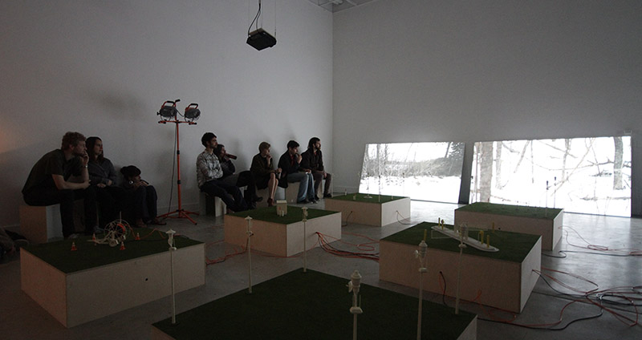
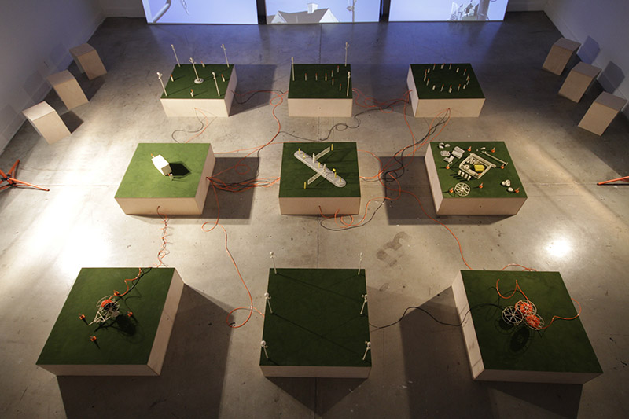
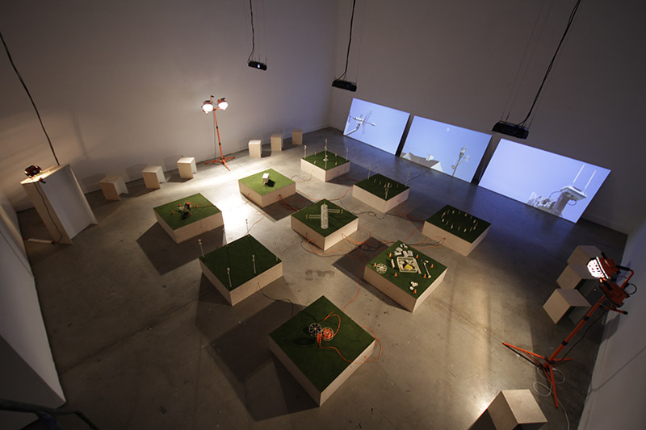
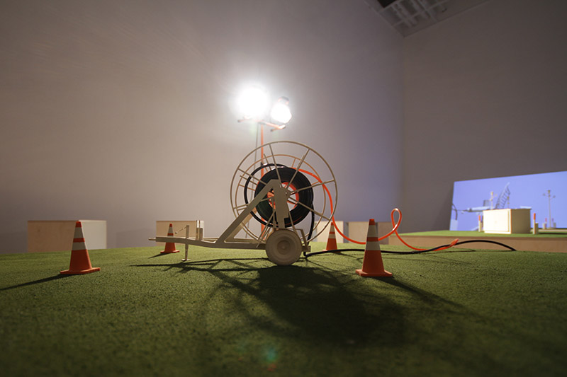
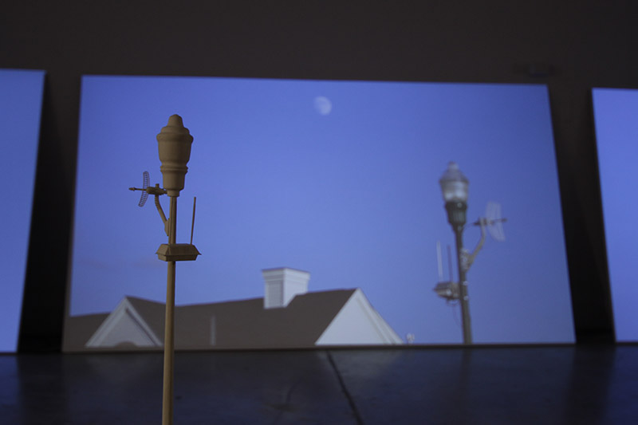
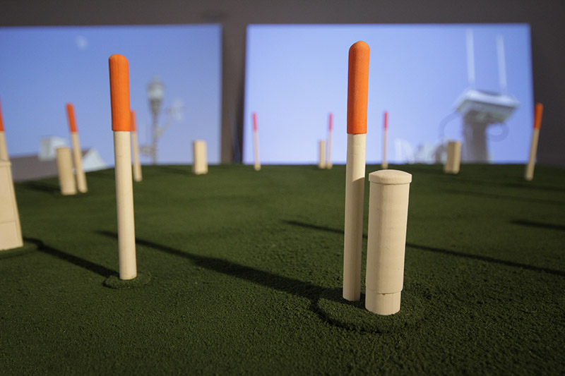
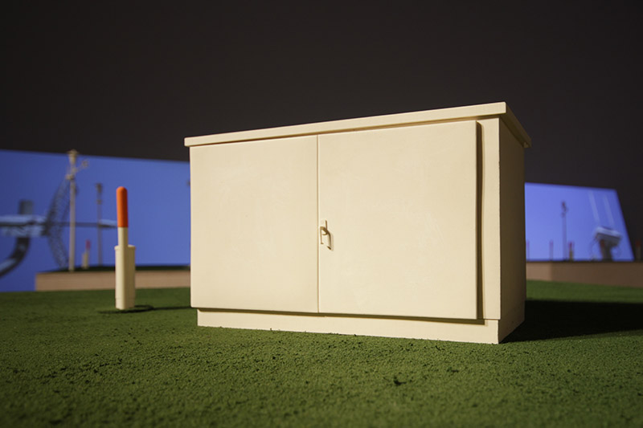
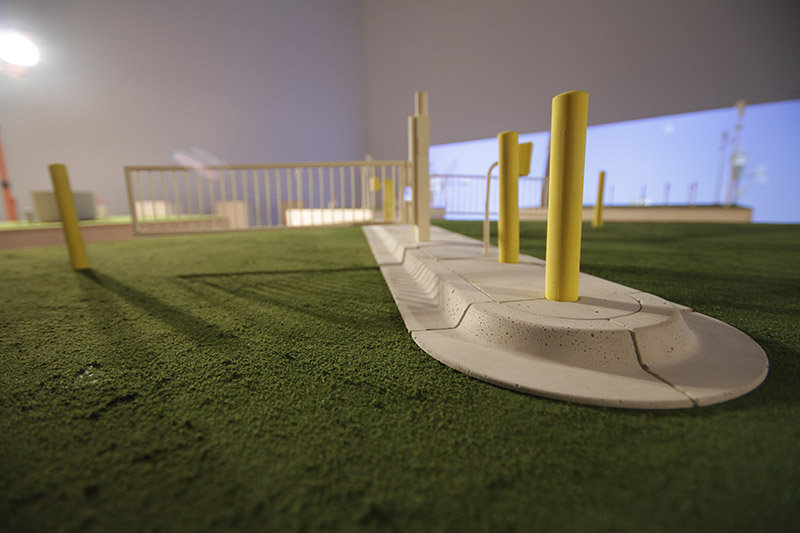
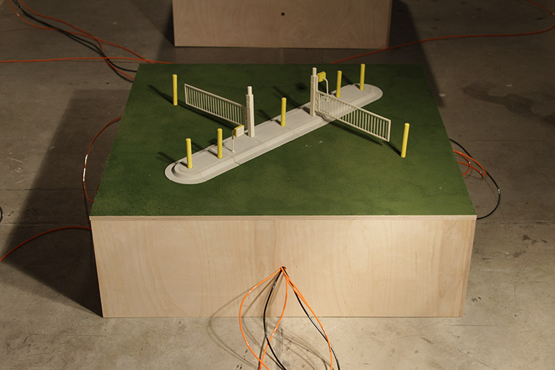
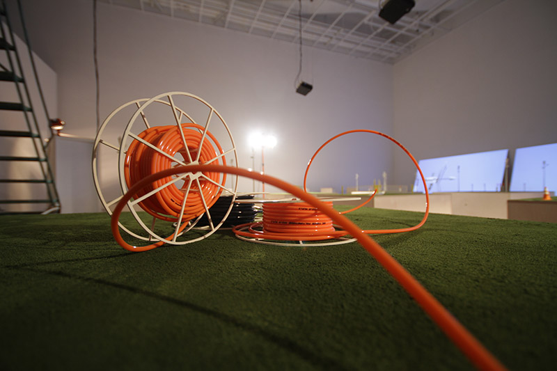
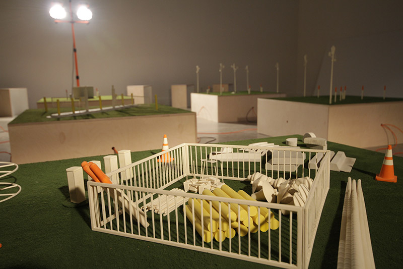
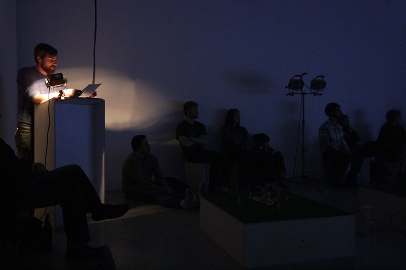
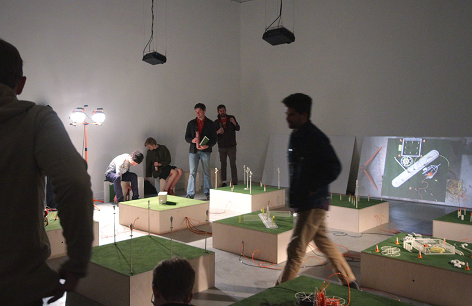